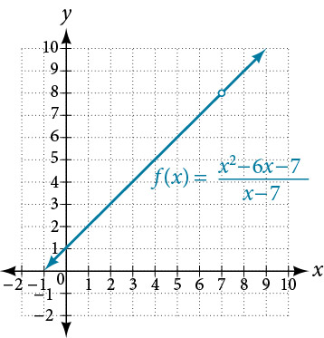
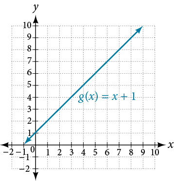
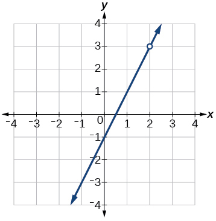
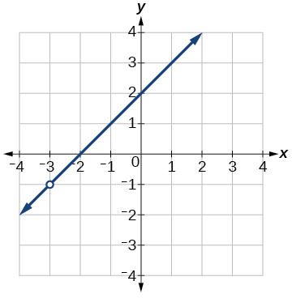
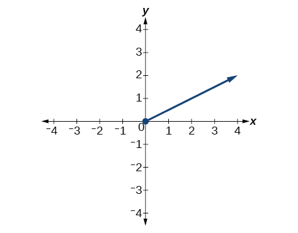

Finding Limits: Properties of Limits
Consider the rational function
The function can be factored as follows:
Does this mean the function is the same as the function
The answer is no. Function does not have in its domain, but does. Graphically, we observe there is a hole in the graph of at as shown in Figure 1 and no such hole in the graph of as shown in Figure 2.


So, do these two different functions also have different limits as approaches 7?
Not necessarily. Remember, in determining a limit of a function as approaches what matters is whether the output approaches a real number as we get close to The existence of a limit does not depend on what happens when equals
Look again at Figure 1 and Figure 2. Notice that in both graphs, as approaches 7, the output values approach 8. This means
Remember that when determining a limit, the concern is what occurs near not at In this section, we will use a variety of methods, such as rewriting functions by factoring, to evaluate the limit. These methods will give us formal verification for what we formerly accomplished by intuition.
Finding the Limit of a Sum, a Difference, and a Product
Graphing a function or exploring a table of values to determine a limit can be cumbersome and time-consuming. When possible, it is more efficient to use the properties of limits, which is a collection of theorems for finding limits.
Knowing the properties of limits allows us to compute limits directly. We can add, subtract, multiply, and divide the limits of functions as if we were performing the operations on the functions themselves to find the limit of the result. Similarly, we can find the limit of a function raised to a power by raising the limit to that power. We can also find the limit of the root of a function by taking the root of the limit. Using these operations on limits, we can find the limits of more complex functions by finding the limits of their simpler component functions.
Evaluating the Limit of a Function Algebraically
Evaluate
Solution
Finding the Limit of a Polynomial
Not all functions or their limits involve simple addition, subtraction, or multiplication. Some may include polynomials. Recall that a polynomial is an expression consisting of the sum of two or more terms, each of which consists of a constant and a variable raised to a nonnegative integral power. To find the limit of a polynomial function, we can find the limits of the individual terms of the function, and then add them together. Also, the limit of a polynomial function as approaches is equivalent to simply evaluating the function for .
Evaluating the Limit of a Function Algebraically
Evaluate
Solution
Evaluating the Limit of a Polynomial Algebraically
Evaluate
Solution
Finding the Limit of a Power or a Root
When a limit includes a power or a root, we need another property to help us evaluate it. The square of the limit of a function equals the limit of the square of the function; the same goes for higher powers. Likewise, the square root of the limit of a function equals the limit of the square root of the function; the same holds true for higher roots.
Evaluating a Limit of a Power
Evaluate
Solution
We will take the limit of the function as approaches 2 and raise the result to the 5th power.
Finding the Limit of a Quotient
Finding the limit of a function expressed as a quotient can be more complicated. We often need to rewrite the function algebraically before applying the properties of a limit. If the denominator evaluates to 0 when we apply the properties of a limit directly, we must rewrite the quotient in a different form. One approach is to write the quotient in factored form and simplify.
Evaluating the Limit of a Quotient by Factoring
Evaluate
Solution
Factor where possible, and simplify.
Evaluating the Limit of a Quotient by Finding the LCD
Evaluate
Solution
Find the LCD for the denominators of the two terms in the numerator, and convert both fractions to have the LCD as their denominator.

Analysis
When determining the limit of a rational function that has terms added or subtracted in either the numerator or denominator, the first step is to find the common denominator of the added or subtracted terms; then, convert both terms to have that denominator, or simplify the rational function by multiplying numerator and denominator by the least common denominator. Then check to see if the resulting numerator and denominator have any common factors.
Evaluating a Limit Containing a Root Using a Conjugate
Evaluate
Solution
Analysis
When determining a limit of a function with a root as one of two terms where we cannot evaluate directly, think about multiplying the numerator and denominator by the conjugate of the terms.
Evaluating the Limit of a Quotient of a Function by Factoring
Evaluate
Solution
Analysis
Multiplying by a conjugate would expand the numerator; look instead for factors in the numerator. Four is a perfect square so that the numerator is in the form
and may be factored as
Evaluating the Limit of a Quotient with Absolute Values
Evaluate
Solution
The function is undefined at so we will try values close to 7 from the left and the right.
Left-hand limit:
Right-hand limit:
Since the left- and right-hand limits are not equal, there is no limit.
Key Concepts
- The properties of limits can be used to perform operations on the limits of functions rather than the functions themselves. See Example 1.
- The limit of a polynomial function can be found by finding the sum of the limits of the individual terms. See Example 2 and Example 3.
- The limit of a function that has been raised to a power equals the same power of the limit of the function. Another method is direct substitution. See Example 4.
- The limit of the root of a function equals the corresponding root of the limit of the function.
- One way to find the limit of a function expressed as a quotient is to write the quotient in factored form and simplify. See Example 5.
- Another method of finding the limit of a complex fraction is to find the LCD. See Example 6.
- A limit containing a function containing a root may be evaluated using a conjugate. See Example 7.
- The limits of some functions expressed as quotients can be found by factoring. See Example 8.
- One way to evaluate the limit of a quotient containing absolute values is by using numeric evidence. Setting it up piecewise can also be useful. See Example 9.
Section Exercises
Verbal
Give an example of a type of function whose limit, as approaches is
Solution
If is a polynomial function, the limit of a polynomial function as approaches will always be
When direct substitution is used to evaluate the limit of a rational function as approaches and the result is does this mean that the limit of does not exist?
What does it mean to say the limit of as approaches is undefined?
Solution
It could mean either (1) the values of the function increase or decrease without bound as approaches or (2) the left and right-hand limits are not equal.
Algebraic
For the following exercises, evaluate the limits algebraically.
Solution
Solution
6
Solution
Solution
6
Solution
does not exist
Solution
Solution
Solution
Solution
1
Solution
6
Solution
1
Solution
1
Solution
does not exist
For the following exercise, use the given information to evaluate the limits: .
Solution
Solution
For the following exercises, evaluate the following limits.
Solution
0
Solution
Solution
does not exist; right-hand limit is not the same as the left-hand limit.
Solution
2
Solution
Limit does not exist; limit approaches infinity.
For the following exercises, find the average rate of change
Solution
Solution
Solution
Solution
Solution
Graphical
Find an equation that could be represented by Figure 3.

Find an equation that could be represented by Figure 4.

Solution
For the following exercises, refer to Figure 5.

What is the right-hand limit of the function as approaches 0?
What is the left-hand limit of the function as approaches 0?
Solution
does not exist
Real-World Applications
The position function gives the position of a projectile as a function of time. Find the average velocity (average rate of change) on the interval .
The height of a projectile is given by Find the average rate of change of the height from second to seconds.
Solution
52
The amount of money in an account after years compounded continuously at 4.25% interest is given by the formula where is the initial amount invested. Find the average rate of change of the balance of the account from year to years if the initial amount invested is $1,000.00.
Analysis
When the limit of a rational function cannot be evaluated directly, factored forms of the numerator and denominator may simplify to a result that can be evaluated.
Notice, the function
is equivalent to the function
Notice that the limit exists even though the function is not defined at